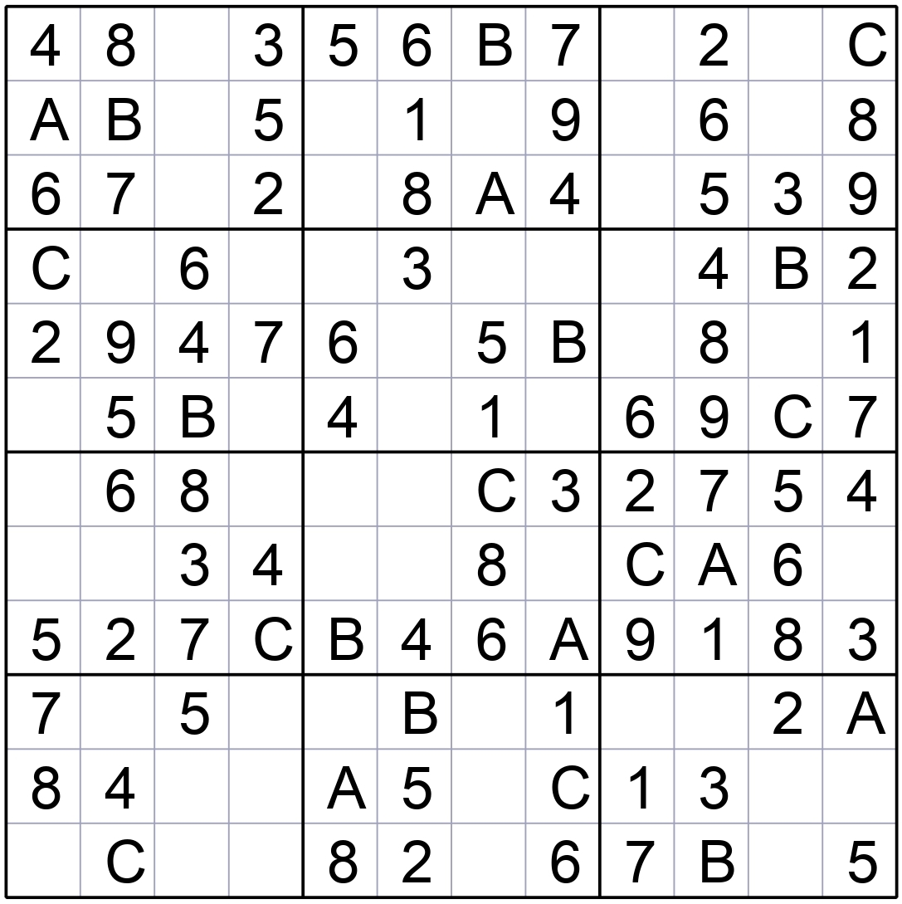
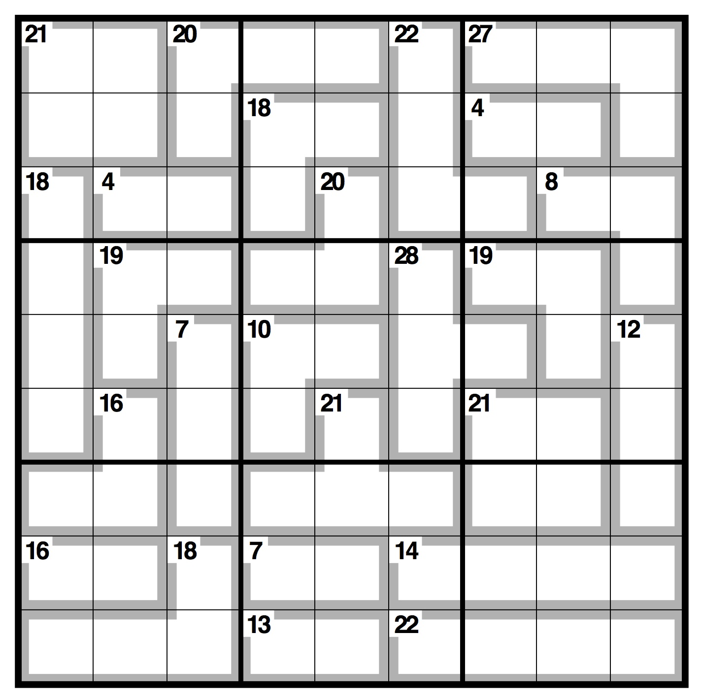
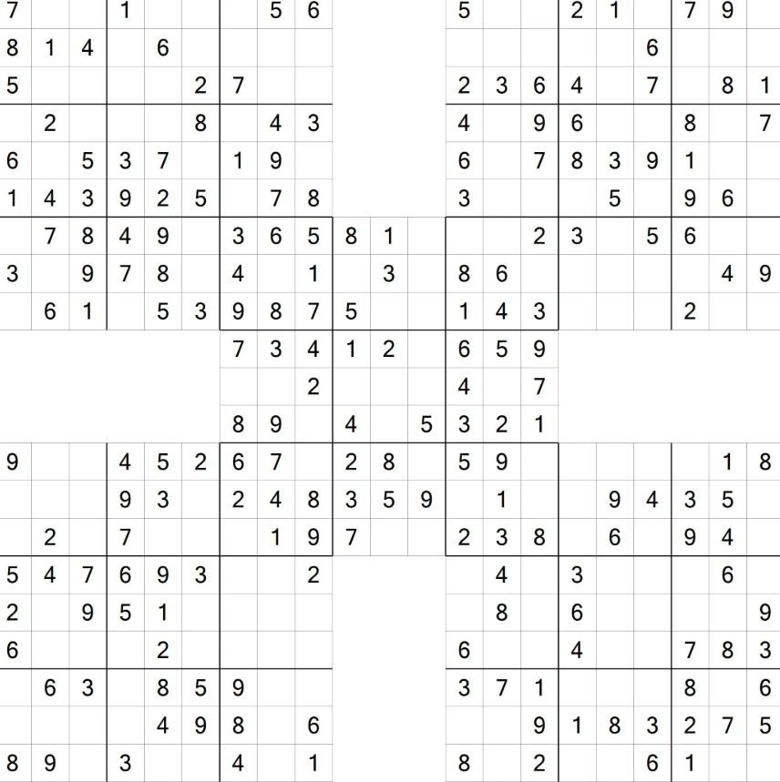
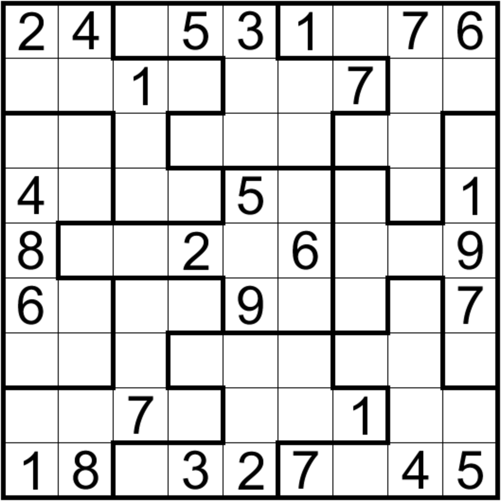

Basic Sudoku Resolver
This is a basic sudoku resolver. Basic stuff you should be able to resolve without this site (except if there is porbabilities).

Big Sudoku Resolver (1-12)
It takes the numbers from 1 to 12, which gives us a 12x12... So, big sudokus are for big brains. I guess your's small.
Killer Sudoku Resolver
This is a killer sudoku resolver. Killer sudokus are sudokus with cages and sums. This resolver can handle that, you don't.
Samurai Sudoku Resolver
This is a samurai sudoku resolver. Samurai sudokus are 5 overlapping basic sudokus. Guess there's more sudokus than you have iq.
Sudoku X Resolver
This is a sudoku X resolver. Sudoku X are sudokus where the two main diagonals also have to contain all numbers from 1 to 9. Guess the 2 main diagonals of your brain doesn't work...

Irregular Sudoku Resolver
This is an irregular sudoku resolver. Irregular sudokus have regions that are not the regular 3x3 squares. Irregular just like your brain.
